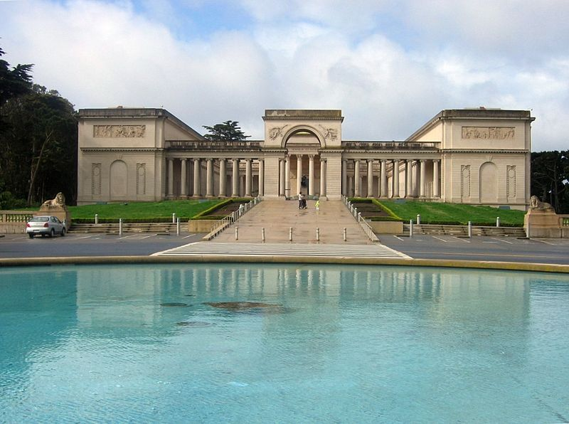

Сан-Франциско
Пляжи и парки
По всему побережью Тихого океана растянулся пляж Оушен-Бич, но он непригоден для купания — хотя популярен среди сёрферов — из-за холодной воды и сильных течений. Всю территорию восточнее моста Золотые ворота до парка Пресидио, бывшей военной базы, занимает пляж Бейкер-Бич, пляж известен своими колониями исчезающего растения Hesperolinon congestum. В общей сложности в Сан-Франциско насчитывается более 200 парков. Самый большой и известный парк в городе — парк Золотые ворота, он занимает территорию протяжённостью от центра города до Тихого океана. Когда-то всю территорию парка покрывали лишь трава и песчаные дюны, но теперь парк состоит из тысячи искусственно посаженых растений и деревьев. В парке есть несколько различных садов, самые знаменитые из них: консерватория цветов, японский чайный сад и ботанический сад Стрибинг-Арботериум. Озеро Мерсед — это пресное озеро, окружённое парковой зоной, которое находится неподалёку от Зоопарка Сан-Франциско, ставшего домом для более чем 250 видов животных, многие из которых находятся под угрозой исчезновения. Парк Буэна-Виста находится в районе Хейт-Эшбери, известном своей ролью в движении Хиппи 60-х годов. Официально самый старый парк в Сан-Франциско, он был основан в далёком 1867 году и сперва носил имя Хилл парк, а в 1984 получил своё нынешнее название. Парк расположен на холме, откуда открывается действительно красивый вид на город.

Фестивали и ярмарки
В Сан-Франциско проходит очень много различных и уникальных уличных фестивалей, вечеринок и парадов. Ярмарка Фолсом-Стрит проходит в сентябре, парад в честь Китайского нового года в феврале, Карнавал (сезон христианских праздников) проходит в течение весны, неделя Флота в октябре, а рейв-фестиваль «Лавфест» проходит в начале октября. Сан-Франциско также проводит различные массовые спортивные соревнования, например, гонка от залива до Брейкерс или Марафон Сан-Франциско. Много кварталов города имеют свои собственные ежегодные фестивали, в особенности живые выступления музыкантов. Самые большие из них: ярмарка Кастро-стрит, Художественный фестиваль Юнион-стрит, фестиваль Норс-Бич и ярмарка Хейт-Эшбери. Опера Сан-Франциско каждый год в парке Золотые ворота под открытым небом, бесплатно устраивает фестиваль. Симфонический оркестр аналогично Опере устраивает несколько выступлений в июле и также является неотъемлемой частью фестиваля Стерм-Грув. 4 июля, в День независимости США, над Рыбацкой пристанью проходит ежегодный фейерверк; другое фейерверк-шоу проходит в мае, на празднике KFOG: Kaboom!. 
Опера Сан-Франциско
Второй оперный театр в США. Первый — Метрополитен-опера в Нью-Йорке, основана в 1880 году. Опера Сан-Франциско основана в 1923 году итальянским дирижёром Джаетано Мелора. В 1932 году её домом стало новое здание Военно-мемориального дома оперы (архитекторы Артур Браун мл. и Густав Альберт Лансбург).